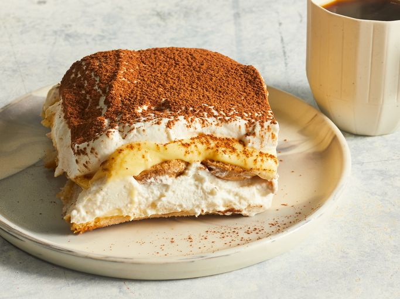

./Tiramisu

What is Tiramisu ?
Tiramisu is a coffee-flavored dessert that features layers of homemade whipped cream, an egg yolk-enriched mascarpone filling, and coffee-soaked ladyfingers.
How to pronounce
Not sure how to pronounce tiramisu? Order in confidence by saying "tee-ruh-mee-soo."
#ingredients
- 6 large egg yolks
- ¾ cup white sugar
- ⅔ cup milk
- ½ teaspoon vanilla extract
- 1 pound mascarpone cheese, at room temperature
- ¼ cup strong brewed coffee, at room temperature
- 2 tablespoons rum
- 2 (3 once) packages ladyfinger cookies
- 1 tablespoon unsweetened cocoa powder
#steps
- whisk egg yolks and sugar together in a medium saucepan until well blended.
- whiskin milk and cook over medium heat, stirring constantly, until mixture comes to a boil./li>
- boil gently for 1 minute, then remove from the heat and allow to cool slightly.
- cover tightly and chill in the refrigerator for 1 hour.
- beat cream and vanilla in a medium bowl with an electric mixer until stiff peaks form.
- remove egg yolk mixture from the refrigerator; add mascarpone cheese and whisk until smooth.
- combine coffee and rum in a small bowl. Split ladyfingers in half lengthwise and drizzle with the coffee mixture. Arrange 1/2 of the soaked ladyfingers in the bottom of a 7x11-inch dish.
- spread 1/2 of the mascarpone mixture over the ladyfingers, then spread 1/2 of the whipped cream over top. Repeat layers once more.
- sprinkle cocoa powder over top.
- enjoy!